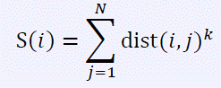

输入的第一行包括两个正整数N 和k。下面有N-1 行，每行两个正整数u、v (1 ≤ u, v ≤ N)，表示第u 个城市和第v 个城市之间有道路相连。这些道路保证能符合题目的要求。
Crash 小朋友最近迷上了一款游戏——文明5(Civilization V)。在这个游戏中，玩家可以建立和发展自己的国家，通过外交和别的国家交流，或是通过战争征服别的国家。现在Crash 已经拥有了一个N 个城市的国家，这些城市之间通过道路相连。由于建设道路是有花费的，因此Crash 只修建了N-1 条道路连接这些城市，不过可以保证任意两个城市都有路径相通。在游戏中，Crash 需要选择一个城市作为他的国家的首都，选择首都需要考虑很多指标，有一个指标是这样的：  其中S(i)表示第i 个城市的指标值，dist(i, j)表示第i 个城市到第j 个城市需要经过的道路条数的最小值，k 为一个常数且为正整数。因此Crash 交给你一个简单的任务：给出城市之间的道路，对于每个城市，输出这个城市的指标值，由于指标值可能会很大，所以你只需要输出这个数mod 10007 的值。
输入的第一行包括两个正整数N 和k。下面有N-1 行，每行两个正整数u、v (1 ≤ u, v ≤ N)，表示第u 个城市和第v 个城市之间有道路相连。这些道路保证能符合题目的要求。
输出共N 行，每行一个正整数，第i 行的正整数表示第i 个城市的指标值 mod 10007 的值。
5 2
1 2
1 3
2 4
2 5
10
7
23
18
1820%的数据满足N ≤ 5000、k ≤ 30。 50%的数据满足N ≤ 50000、k ≤ 30。 100%的数据满足N ≤ 50000、k ≤ 150。 【特别注意】由于数据大小限制为5MB，我只好对测试时的输入文件进行压缩处理。下面的函数可以将压缩的输入文件转化为原始输入文件。（函数从infile 中读入压缩的输入文件，将解压缩后的输入文件输出到outfile 中） C/C++版本： void Uncompress(FILE *infile, FILE *outfile) { int N, k, L, i, now, A, B, Q, tmp; fscanf(infile, "%d%d%d", &N, &k, &L); fscanf(infile, "%d%d%d%d", &now, &A, &B, &Q); fprintf(outfile, "%d %d\n", N, k); for (i = 1; i < N; i ++) { now = (now * A + B) % Q; tmp = (i < L) ? i : L; fprintf(outfile, "%d %d\n", i - now % tmp, i + 1); } } Pascal 版本： procedure Uncompress(var infile, outfile : text); var N, k, L, i, now, A, B, Q, tmp : longint; begin read(infile, N, k, L, now, A, B, Q); writeln(outfile, N, ' ', k); for i := 1 to N - 1 do begin now := (now * A + B) mod Q; if i < L then tmp := i else tmp := L; writeln(outfile, i - now mod tmp, ' ', i + 1); end; end; 下面给出一个具体的例子。civiliazation_compressed.in 表示压缩的输入文件， civilization.in 表示解压缩后的输入文件。 civilization_compressed.in 7 26 4 29643 2347 5431 54209 civilization.in 7 26 1 2 2 3 2 4 3 5 4 6 5 7
2016.2.19重设时限为10s